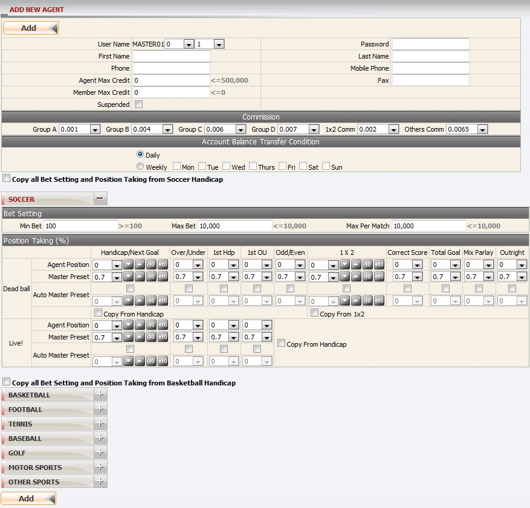
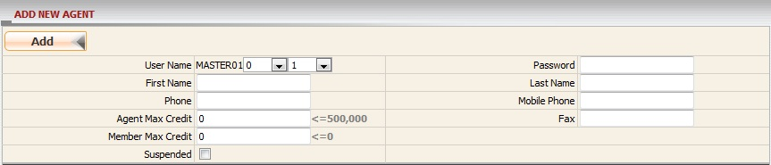
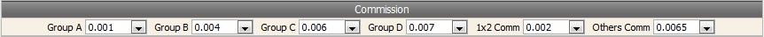
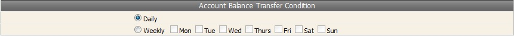
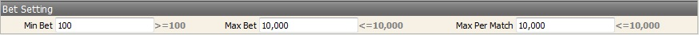
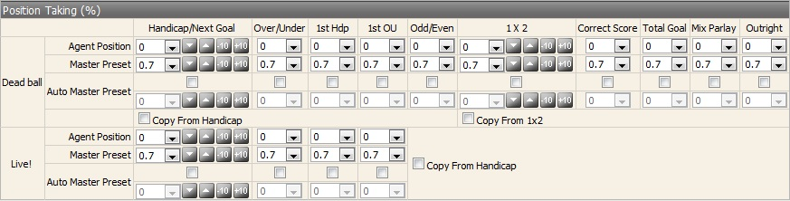
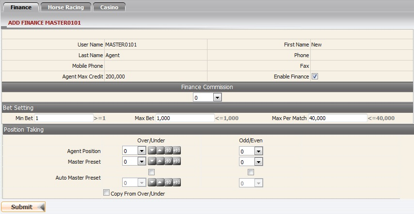
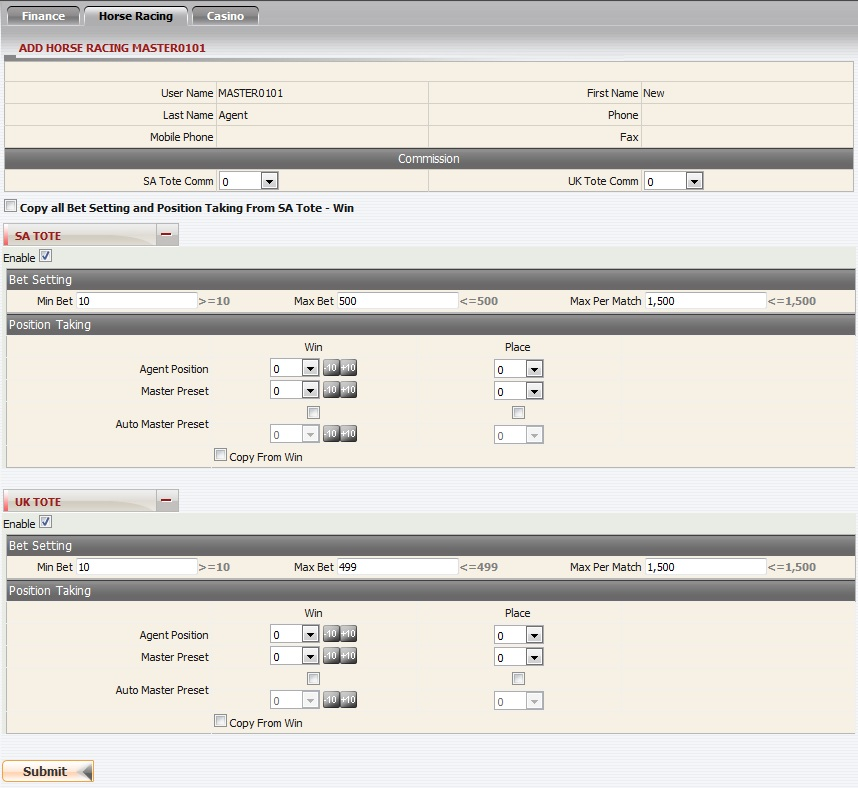
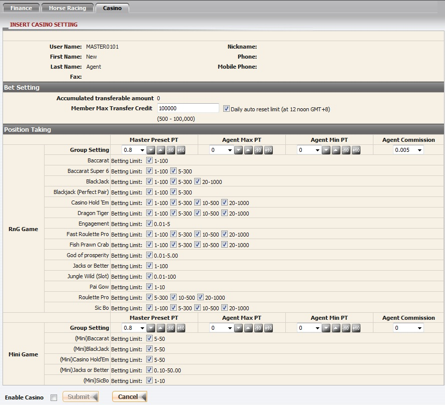

New Agent
Definition:
This function allows master to create a new agent then edit the commission, bet setting and position taking for that agent.
When we first launch New Agent function, Add New Agent page will display as figure below:

New Agent
How to?
To accomplish creating a new agent, you have to fill in:
- Agent info registration.
- Commission setting.
- Transfer Condition (This section only appears when master is allowed to transfer on Daily).
- Bet setting.
- Position taking setting.
Agent info registration
This is to register all necessary information for a agent. In this form, the following things should be noted:
- Agent max credit cannot be greater than Master available credit.
- Member max credit cannot be greater than Agent max credit.
- Member given credit must be <= Member max credit.
- Password must be at least 6 characters including at least 2 letters and 2 digits.
- If your account is suspended then all downlines will be suspended and members will not be able place bet.
- If your status is closed then all downlines will be closed as well.
- If your account is unsuspended by Upline then all downlines will be unsuspended too.
- If your account is reopen by Upline, your downlines are still closed until you open them.

Agent Information
Commission setting
This is where to set percentage of commsion earning for agent, just select a value from the drop down list and remember that agent commission setting cannot be greater than master's.

Commission Setting
Term definition:
-
Group A,B,C,D: commission setting for agent based on group, and these setting will be applied for tickets with bet type Handicap, Odd/Even, Over/Under. Note that each member will belong to an explicit group ( A, B, C , D).
-
1x2 Comm: commission setting for agent based on member tickets with bet type 1x2.
-
Others Comm: commission setting for agent based on member tickets with others bet type except Handicap, Over/Under, Odd/Even and 1x2.
Account Balance Transfer Condition
This only appears when you have Daily Transfer Condition.
- If you are allowed to transfer on Daily basis, then transfer condition of your agents can be changed any time.
- If you are allowed to transfer on Weekly basis, then transfer condition of your agents will be followed and can not be changed.

Account Balance Transfer Condition
Bet setting
This setting will limit the maximum or minimum bet amount applied to agent. Be advised that Min Bet < Max Bet < Max Per Match.

Bet Setting
Term definition:
- Min bet: agent's minimum bet amount accepted.
- Max bet: agent's maximum bet amount accepted.
- Max per match: agent's maximum amount per match accepted.
Remark: The different entry/team name will considered as another match.
For example, the following matches are all considered different matches or separate events.
a) "Spain (N) -vs- Netherland2010" [FIFA World Cup South Africa].
b) "Spain 00:00-15:00 -vs- Netherlands 00:00-15:00" [2010 FIFA World Cup South Africa - SPECIFIC 15 MINS OVER/UNDER].
c) "Spain 15:01-30:00 -vs- Netherlands 15:01-30:00" [2010 FIFA World Cup South Africa - SPECIFIC 15 MINS OVER/UNDER].
Where the league name is the same, however with different team names, the above mentioned condition still applies.
Position taking setting
This setting will determine initially your initial Position Taking and the maximum postion taking that Agent can take on his/her member turnover based on Sport type and Bet type.

Position Taking Setting
After finishing all of these steps, system will direct you to the next page to update setting for Finance, Horse Racing and Casino.
Update Finance's setting
Agent should be enabled Finance so that he/she can have the option to offer or deny Finance betting to his/her members. Rules that govern Finance setting will follow Sportsbook.

Finance
Update Horse Racing's setting
Agent should be enabled Horse Racing so that he/she can have the option to offer or deny Horse Racing betting to his/her members. Rules that govern Horse Racing setting will follow Sportsbook. Currently, system offers SA Tote and UK Tote, available bet types: Win, Place.

Horse Racing
Update Casino's setting
Agent should be enabled Casino so that he/she can have the option to offer or deny Casino betting to his/her members. Rules that govern Casino setting will follow Sportsbook, morever there are some other Casino terms and rules that stated below:
- Accummulated transferable amount: total amount included today win/loss that can be able to transfer to Casino.
- Member Max Transfer Credit: maximum transfer amount that agent can set for his/her member to transfer into Casino.
- Daily auto reset limit: reset Accumulated Transferable amount to be equal to Member Max Transfer Credit at noon time.
- Betting Limit: this value is set for member which limit betting amount on each casino game.

Casino